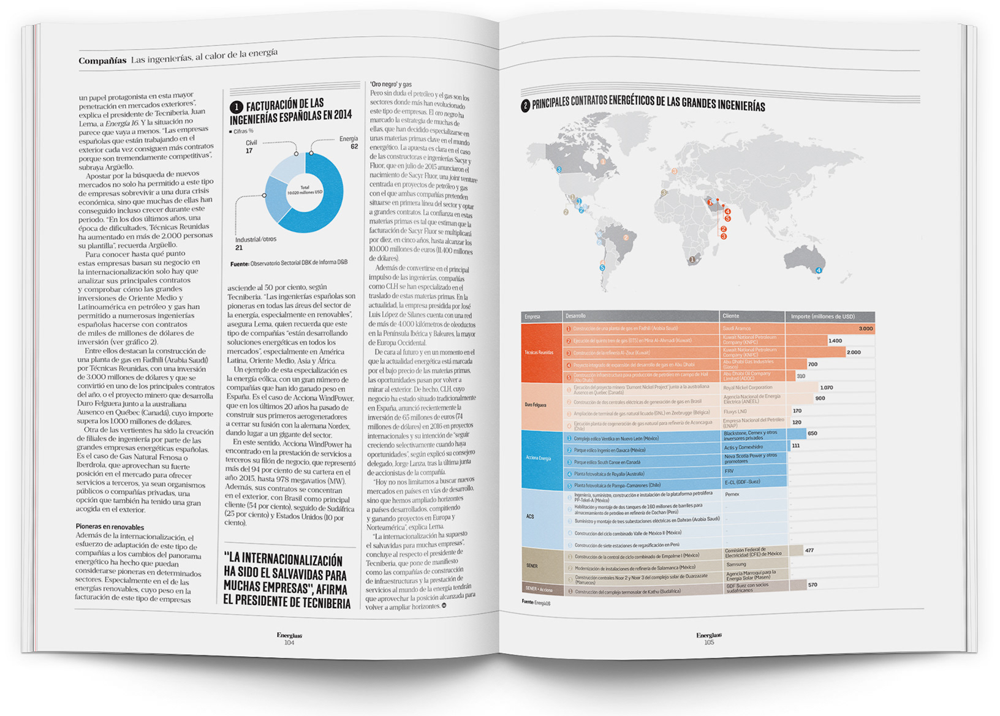

Contratos energéticos de grandes ingenierías
Editorial Infographic / Data VisualizationContext
This project analyzes the global presence of major Spanish engineering companies through their energy contracts. The infographic was developed as part of an editorial publication covering the role of engineering firms in the global energy sector.
Challenge
The challenge was to organize a large amount of structured data, including geographic distribution, project types and contract values, into a clear and readable visual system within an editorial environment.
Design Approach
The main visualization combines a world map with a structured table, linking geographic locations to specific contracts and companies. Color coding is used to differentiate companies and improve readability across the dataset.
The visualization was designed as a modular system, allowing different types of data (geographic, categorical and quantitative) to coexist within a unified visual language.
A secondary chart (donut chart) complements the piece by summarizing revenue distribution, providing additional context to the main visualization.
Information Structure
The right page functions as the primary data visualization, integrating geographic and tabular information. The left page includes supporting content and a secondary chart that reinforces the overall narrative.
Role
Data visualization and infographic design (map, table and chart). The editorial layout and text composition were part of the publication design.
